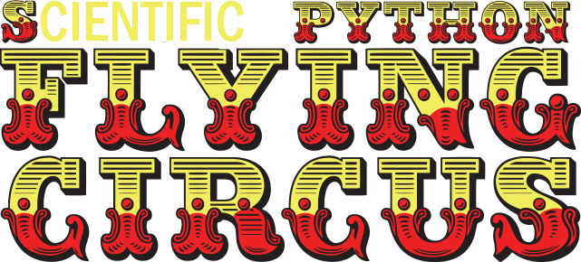

{% if page.eventbrite %} {% endif %}The Python course will draw on materials from Software Carpentry, providing a condensed version of their proven approach to teaching basic programming concepts to researchers.
If you would like to review the materials ahead of the course, you can find them here. For more information on what Software Carpentry teaches and why, consult their paper "Best Practices for Scientific Computing".
Who: The course is aimed at AISSR graduate students and other researchers. You don't need to have any previous knowledge of the tools that will be presented at the workshop.
{% if page.latlng %}Where: {{page.address}}. Get directions with OpenStreetMap or Google Maps.
{% endif %}Requirements: Participants must bring a laptop with a Mac, Linux, or Windows operating system (not a tablet or Chromebook). They should have a few specific software packages installed before the course starts (listed below).
Contact: Please email {% if page.contact %} {% for contact in page.contact %} {% if forloop.last and page.contact.size > 1 %} or {% else %} {% unless forloop.first %} , {% endunless %} {% endif %} {{contact}} {% endfor %} {% else %} to-be-announced {% endif %} for more information.
Etherpad: {{page.etherpad}}.
We will use this Etherpad for chatting, taking notes, and sharing URLs and bits of code.
To participate in this course, you will need access to the software described below. In addition, you will need an up-to-date web browser.
We maintain a list of common issues that occur during installation as a reference for instructors that may be useful on the Configuration Problems and Solutions wiki page.
Python is a popular language for research computing, and great for general-purpose programming as well. Installing all of its research packages individually can be a bit difficult, so we recommend Anaconda, an all-in-one installer.
Regardless of how you choose to install it, please make sure you install Python version 3.x (e.g., 3.5 is fine).
We will teach Python using the IPython notebook, a programming environment that runs in a web browser. For this to work you will need a reasonably up-to-date browser. The current versions of the Chrome, Safari and Firefox browsers are all supported (some older browsers, including Internet Explorer version 9 and below, are not).
bash Anaconda3-and then press tab. The name of the file you just downloaded should appear.
yes and
press enter to approve the license. Press enter to approve the
default location for the files. Type yes and
press enter to prepend Anaconda to your PATH
(this makes the Anaconda distribution the default Python).
When you're writing code, it's nice to have a text editor that is
optimized for writing code, with features like automatic
color-coding of key words. The default text editor on Mac OS and
Linux is usually set to Vim, which is not famous for being
intuitive. if you accidentally find yourself stuck in it, try
typing the escape key, followed by :q! (colon, lower-case 'q',
exclamation mark), then hitting Return to return to the shell.
nano is a basic editor and the default that instructors use in the workshop. To install it, download the Software Carpentry Windows installer and double click on the file to run it. This installer requires an active internet connection.
Others editors that you can use are SciTE, VS Code, Notepad++ or Sublime Text. Be aware that you must add its installation directory to your system path. Please ask your instructor to help you do this.
nano is a basic editor and the default that instructors use in the workshop. See the Git installation video tutorial for an example on how to open nano. It should be pre-installed.
Others editors that you can use are VS Code, Text Wrangler or Sublime Text.
nano is a basic editor and the default that instructors use in the workshop. It should be pre-installed.
Others editors that you can use are SciTE, VS Code, Gedit, Kate or Sublime Text.